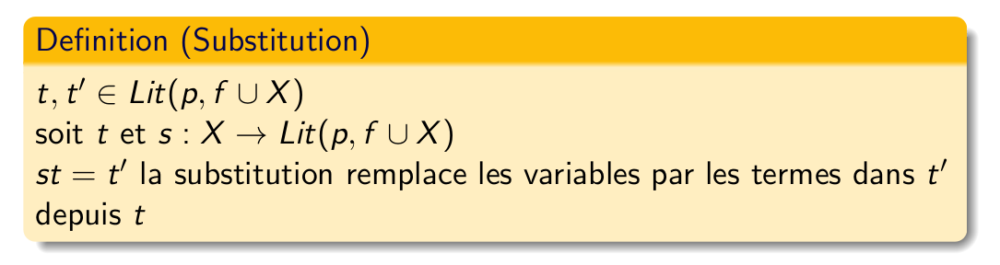
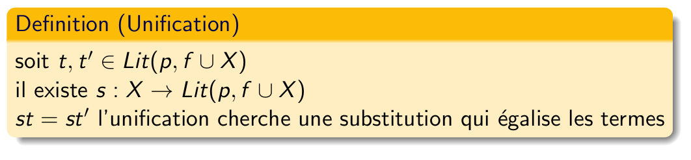
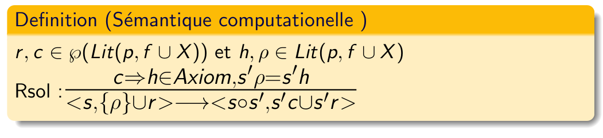

Une clause est une affirmation portant sur des atomes logiques ; un atome logique exprime une relation entre des termes ; les termes sont les objets de l’univers. L’ensemble des termes est construit par les fonctions. On peut construire de nouveaux termes en les combinant à des fonctions.
Il y a trois types de termes: 1. Les variables: Des chaines commençant par une majuscule (exemple: X, Piano, Clavier, etc.)
2. Les valeurs Sont des valeurs directes, peuvent être des nombres, chaînes de caractère ou mot commençant par une minuscule (exemple: 7, 32, “Hello”, porte)
3. Fonction Termes compsés. Souvent composé par un mot (commence par une minuscule) et une suite de terme des types 1 et 2 (variables et valeurs; voir plus haut). (exemple: homme(julien), collegue(Varianne,Vulie,Vophie), pin(2,3,7,9)) Func= (a,b,c,…,z)
Les atomes logiques Prédicat Est un atome logique (ou une relation) entre des termes. Un prédicat ne peut pas en contenir un autre. (exemple: pere(toto,paul), habite(X,adresse(12,“rue r”,nice))) Pred= (aa,bb,cc,…,zz)
Un litéral est composé de fonction et de prédicats
Literal Un litéral est composé de prédicat et de fonction Lit= Lit(Pred,Func)
On peut faire une conjonction de litéral grâce à l’opérateur “et”
Clauses Une clause est construite à l’aide de prédicat, de fonction et d’une variable Si c est un ensemble de literal et h un literal alors c => h est une clause Clauses(Pred,Func,X) (exemple: meme_pere(X,Y) :- pere(P,X), pere(P,Y).)
requête Une requête est une conjonction de littéraux Conj= Lit1 et … et Litn
L’enjeu se trouve dans les variables pour la satisfaction des litéraux. Rappel: pour satisfaire une clause, il faut trouver une interprétation des variables qui satisfait la clause (= qui rend la clause vrai)
Deux règles pour la sémantique computationnelle
Substitution Une fonction qui transforme un terme en un nouveau terme en substituant les variables grâce à une assignation 
Unification Fonction qui trouve la substitution s qui égalise deux termes. Ça se rapport à la résolution d’un système d’équation. 
Domaine sémantique:
Substitution x requête
Règle:
s= Substitution, r= Requête, état du système=(s,r) On part avec une substitution vide et on fini avec une requête vide. (void,r)->….->(s,void) 
Points de non-déterminismes Choix des axioms Choix du litéral à résoudre Choix de l’unificateur
On part d’un couple substitution (vide) et requête pour finir avec seulement une substitution
Type: Outil de modélisation pour caractériser les types. (classification)
Cette notion est utile à la personne qui programme car cela permet une meilleure abstraction du monde réel.
Attention: Les sous-classes peuvent être vérifiées uniquement le typage dynamique
Typage faible: très peu (ou pas) de vérification. On fait confiance à la personne qui développe le code.
Typage fort: exige que les vérifications soient faites systématiquement. Pouvoir vérifier clairement la correspondance entre les types. (exemple: Java, Swift, Scala)
Règle pour vérifier si le nom ou la structure (=définition) prime. On favorise le nom. exemple: 1. Si le nom compte plus: * On peut définir une classe poire et une classe pomme qui ont exactement la même structure. Malgré ça, le code empêche de faire la conversion (implicite et automatique) si on veut mettre le contenu d’une structure pomme à une structure poire. * L’avantage est qu’on ne peut pas faire de transformation bizzare qui peuvent rendre le code instable. 2. Si la structure compte plus: * On peut définir une classe poire et une classe pomme qui ont exactement la même structure. On peut facilement faire la conversion (implicite et automatique) si on veut mettre le contenu d’une structure pomme à une structure poire.
Règle automatique coercion (=conversion possible) des valeur (fait sans la connaissance du programmeur) ou manuelle (fait de façon explicite par une fonction spéciale écrite par le programmeur ou déjà présente) Cela implique une hiérarchie des classes. exemple: 1. La coercion se fait automatiquement: C’est au compilateur de déterminer comment convertir.
a= "12"
#La fonction int convertit les chaînes de caractère en nombre
b= int(a)
#Si on avait pas fait la conversion manuellement, ça n'aurai pas marché
c= 2*bRègle qui permet au compilateur ou à l’interpréteur de déterminer le type à partir des sous-expressions. Il y en a, ou il y en a pas.
#include <stdio.h>
int main()
{
int a= 5;
double b= 2.3;
//c va automatiquement faire int*double->int
int c= a*b;
//c va automatiquement faire int*double->float
float d= a*b;
//ça va retourner "c= 11"
printf("c= %d \n", c);
//ça va retourner "d= 11.5"
printf("d= %lf", d);
return 0;
}Les partie du programme ou cet identificateur (= nom de variable) a une liaison. Une variable globale peut être utilisé partout. Une variable local peut être utilisé seulement dans la zone où elle a été crée (par exemple seulement dans une fonction). exemple:
public class test {
//a est de porté global (accessible partout)
public static int a= 5;
public static void main(String[] args){
//b est de porté local (accessible seulement dans main)
int b= 3;
//ici b existe encore
System.out.println(b);
//ici a existe
System.out.println(a);
int c= addition(a,b);
System.out.println(c);
}
public static int addition(int i, int j){
//ici a existe (va afficher sa liaison)
System.out.println(a);
//ici b n'existe pas (ça va envoyer une erreur)
System.out.println(b);
return i+j;
}
}Les endroit ou cet identificateur peut être utilisé. Une variable globale peut exister (=sa liaison existe), mais elle ne peut pas être utilisable car elle est masquée par un homonyme. exemple:
public class test {
//a est de porté global (accessible partout)
public static int a= 5;
public static void main(String[] args){
//appel de la fonction hello
hello();
}
public static void hello(){
//la variable globale a est masqué par la variable local a
String a= "hello";
//ici a= "hello"
System.out.println(a);
//a= 5 quand on quitte la fonction
}
}Période entre la création (allocation de la mémoire) et sa destruction (libération de la mémoire) d’un programme. Quand la variable est créée, elle prendre vraiment de la place dans la mémoire. Quand elle est détruite, elle n’existe plus du tout dans la mémoire. Accéder à une mémoire libéré conduit à une erreur.
Si porté > durée de vie = erreur de programmation